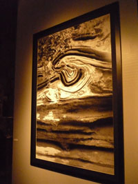

Sarà visitabile fino al 30 Luglio la mostra fotografica di Giorgio Cutini, "Immagini dall'interno", promossa dal Comune di Fermo - Assessorato alla Cultura e dalla Fondazione Cassa di Risparmio di Fermo. La mostra, a cura di Enzo Carli, è stata inaugurata nella splendida cornice del Palazzo dei Priori di Fermo domenica 17 Maggio, con la presentazione di Jean Claude Lemagny. Cutini nasce a Perugia nel 1947. Chirurgo laparoscopico, ha coltivato la propria passione per la fotografia dedicandosi alla fotografia scientifica e frequentando il gruppo di fotografi del Centro Studi Marche. Ha partecipando a numerose esposizioni in Italia e all'estero, ottenendo numerosi riconoscimenti e pubblicazioni, fra le quali le monografie "La vertigine del Movimento" (2002 per l'Editrice Gribaudo di Torino) e "Memografie ed altre storie" (2008, Edizioni Gribaudo).
"Immagini dall'interno" si pone come una riflessione sulla luce, sul movimento, esterno ed interno, e sull'illusorietà della natura oggettiva dell'immagine fotografica e della visione. Movimento legato ad una dimensione temporale specifica, propria della fotografia, che cattura una porzione del tempo e del flusso naturale congelandola nella staticità dell'immagine. Allo stesso tempo però l'uso del bianco e nero nelle riproduzioni di Cutini e la leggerezza immateriale delle trame visuali restituiscono alla quotidianità dell'oggetto ritratto una dimensione astorica e ultraterrena, che viola il confine con la pittura astratta e impressionista. Non vi è l'intento di fissare un momento nella sua irripetibilità, quanto piuttosto, in una dinamica quasi circolare, quello di restituire l'evento catturato al flusso del divenire, dopo aver attraversato l'obiettivo.
L'artista cerca nella fisicità e nella singolare conformazione dei suoi soggetti la frammentazione della materia, la struttura intima del corpo che va oltre i parametri e le convenzioni della visione. Primissimi piani, giochi di luce, movimenti della macchina, trame visive dinamiche mostrano il paradosso di una fotografia che non documenta, ma diventa amorfa, evocativa ed avulsa dalla realtà. Il mare non restituisce la luce ("Non ci sono confini nella luce", 2005), ma il bordo frastagliato delle onde disegna orizzonti luminosi su uno sfondo di sfumature grigio-nere. In "I buchi del vento" (2005) le venature della pietra, le naturali trame ritmiche della materia che lo sguardo quotidiano dell'osservatore sacrifica alla forma e alla visione d'insieme si rivelano come per artificio, emulando a tratti la mano consapevole delle pennellate di un pittore.
Cutini ridisegna la realtà attraverso la lente dell'obiettivo, crea vortici di movimento nei quali il sacrificio della nitidezza dell'immagine immerge l'osservatore in una dimensione ideale e dinamica. La consapevolezza della presenza di un oggetto familiare nell'immagine passa in secondo piano, diventa un gioco dello sguardo, la ricerca della gratificazione di aver svelato un trucco, ma nel momento in cui si percepisce un corpo, una fontana, una realtà conosciuta, è già troppo tardi, perchè l'osservatore si trova già nello spazio onirico dell'arte.
Le stesse figure umane presenti ("Cinetica dell'armonia", 2006) sono spersonalizzate, fantasmi sullo sfondo, o dello sfondo, non dominano l'immagine ma sono immersi nel contesto, entrano nell'illusione di una visione quasi impressionista, che ingloba la figura ma ne distorce la percezione. Una fontana, come uno spettro nella notte, viene attraversata da lampi di luce bianca ("Una sera fredda con molto vento", 2006), fontana d'acqua e fontana di luce, stesso soggetto per sette riproduzioni differenti, come celata da un velo che l'obiettivo cerca di penetrare. Come una Cattedrale di Rouen, la fontana diventa l'oggetto di studio della mutevolezza della percezione, mediata dall'obiettivo.
Il linguaggio di Cutini sosprende, cerca la meraviglia nella quotidianità, e nello stesso tempo trascende il reale astraendo da esso una sorta di spiritualità profana che si libera dagli scenari, fra luci, ombre e profondo silenzio.


Comments